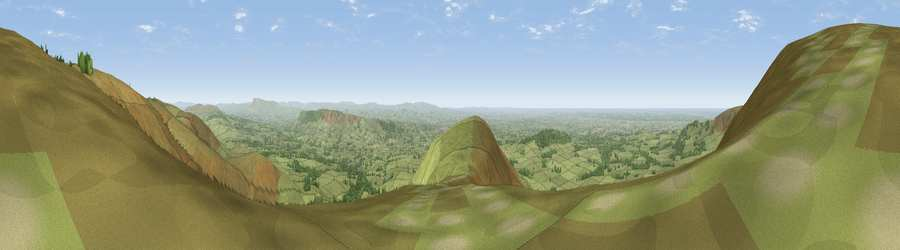

Viewpoint near Bleasdale
#2081 in England · top 1% of its area beats it · near Bleasdale · open accessWhere it is
The exact computed spot (SD 59775 46125). Click the marker for map links.
Public access: this spot lies on mapped open-access land (CRoW Act 2000) — you may roam here on foot. Computed from Natural England's CRoW access layer and OpenStreetMap rights of way — not the legal definitive map. Always verify locally.
The view, rendered

A 360° render of this exact spot computed from the terrain model, tree cover and land cover — summer colours, afternoon light, calibrated against photographs of famous viewpoints. Real trees, hedges and buildings will differ in detail.
The panorama
Grey silhouette: terrain skyline in each direction (720 bearings, Earth curvature and refraction included). Dashed green: skyline with trees (+15 m) and buildings (+8 m) as obstacles. Blue strip: how far the ground is visible on each bearing.
Where the view opens
Wedge length = distance to the farthest visible ground on that bearing (vegetation-aware). Rings at 10, 25 and 50 km.
What fills the view
90% grassland · 7% woodland · 1% cropland ·
Angular shares of the visible panorama (visual magnitude), not map area. Landscape diversity 0.18 (0–1 Shannon).
Key numbers
More beautiful places nearby
The staircase of upgrades: each row has a higher view potential than everything closer. Driving times are estimates from straight-line distance, calibrated against real road routing — check an actual route before setting out.
| Place | Direction | Drive | Score |
|---|---|---|---|
| Paddy's Pole | NW · 1 km | ~3 min | 77.3 |
| Parlick | S · 1 km | ~3 min | 77.5 |
| Viewpoint near Scorton | WNW · 8 km | ~16 min | 79.9 |
| Darwen Hill | SSE · 26 km | ~42 min | 80.7 |
| Warton Crag | NNW · 29 km | ~45 min | 83.2 |
| Viewpoint near Grange-over-Sands | NNW · 38 km | ~57 min | 83.4 |
| Viewpoint near Cartmel | NW · 41 km | ~60 min | 87.0 |
| Viewpoint near Cartmel | NW · 41 km | ~61 min | 87.2 |
53.90971, -2.61380 · source: screening · position refined by local search. Computed location — check access rights before visiting.